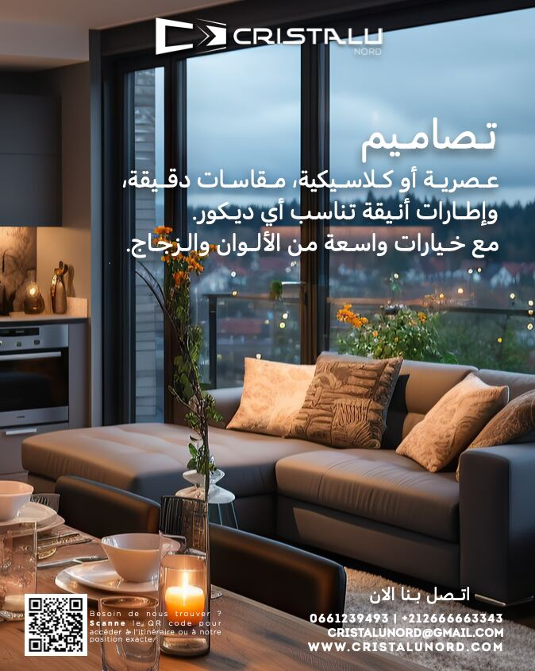
Profilés à rupture de pont thermique, lignes fines et grandes surfaces vitrées.
Découvrir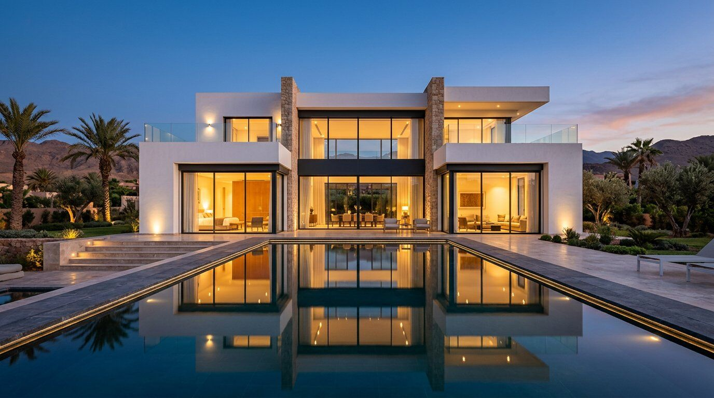
Des solutions conçues pour l'architecture contemporaine.
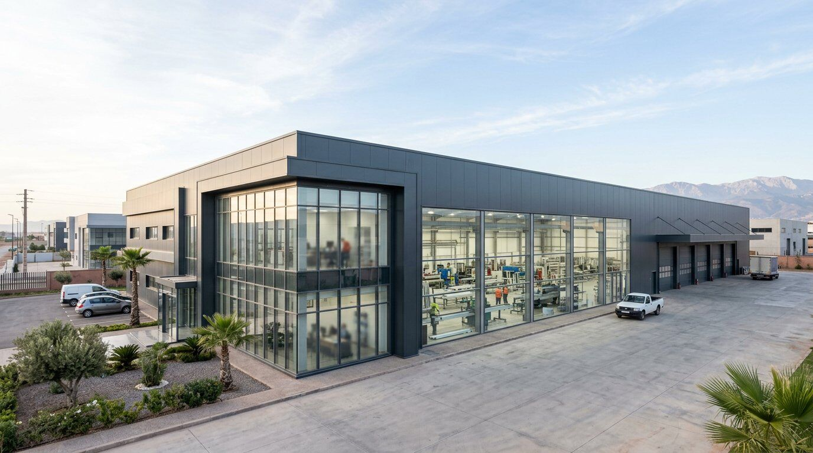
Implantée à Kénitra, Cristalu Maroc conçoit, fabrique et installe des menuiseries en aluminium et en PVC pour les particuliers, les promoteurs, les architectes et les entreprises.
Notre usine intègre l'ensemble de la chaîne de production — de la découpe des profilés à la pose sur chantier — pour garantir une fabrication sur mesure, précise et contrôlée à chaque étape.
Chaque ouvrage suit un processus industriel rigoureux, réalisé par nos propres équipes.
Relevé de mesures, étude technique, choix des systèmes, vitrages et finitions.
Découpe et usinage des profilés aluminium et PVC sur machines à commande numérique.
Sertissage, soudure PVC, pose des joints, quincailleries et vitrages en atelier.
Vérification dimensionnelle, fonctionnement des ouvrants et étanchéité.
Pose par nos équipes qualifiées, dans le respect des règles de l'art.
Réglages, maintenance et suivi de nos ouvrages dans le temps.
Des systèmes éprouvés, fabriqués sur mesure dans notre usine pour répondre aux exigences techniques et esthétiques de chaque projet.

Profilés à rupture de pont thermique, lignes fines et grandes surfaces vitrées.
Découvrir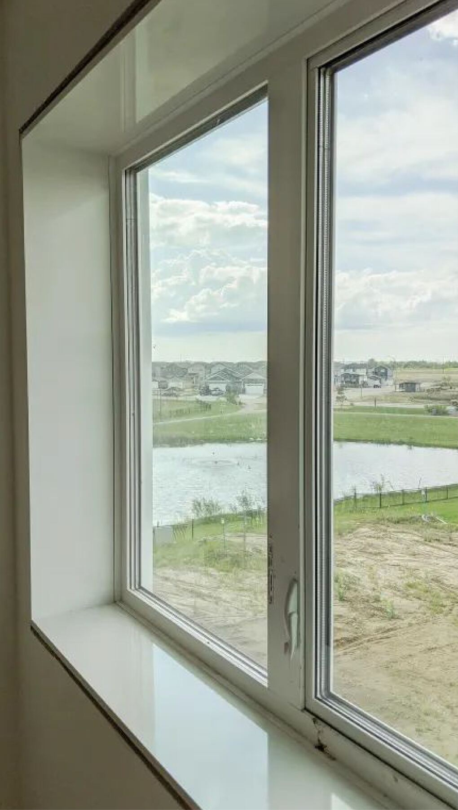
Isolation thermique et acoustique élevée, entretien réduit, durabilité.
Découvrir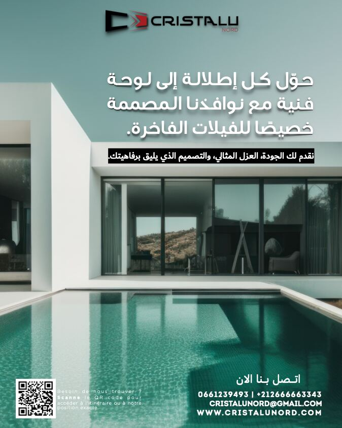
Ouvrants à la française, oscillo-battants, coulissants et fixes.
Découvrir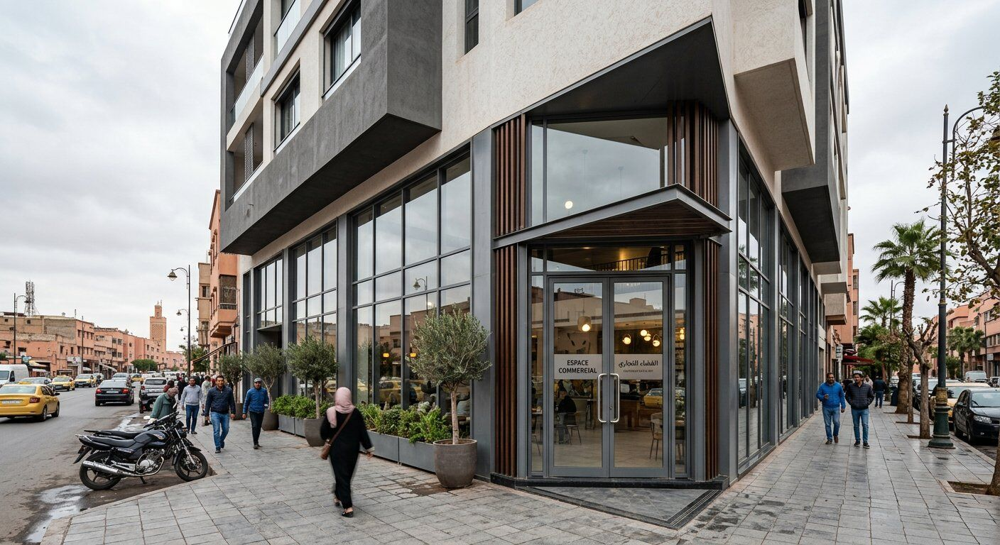
Portes d'entrée, portes-fenêtres et accès commerciaux sécurisés.
DécouvrirCoulissants et galandages grand format pour l'architecture ouverte.
Découvrir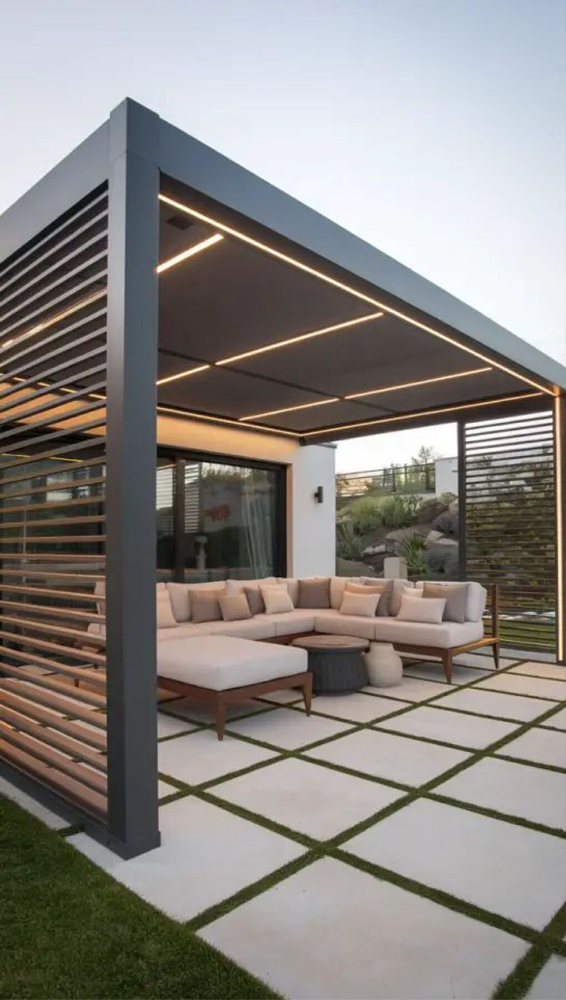
Pergolas bioclimatiques à lames orientables en aluminium.
Découvrir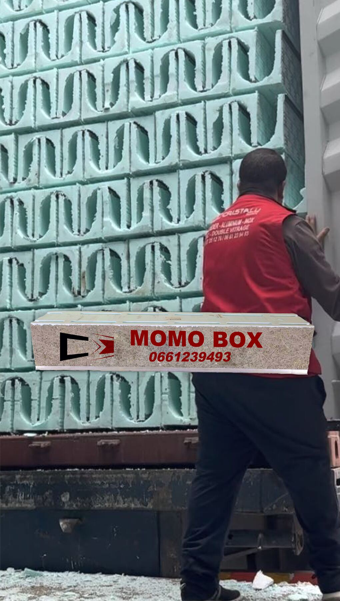
Caisson intégré en polystyrène pour dissimuler rails et rideaux.
Découvrir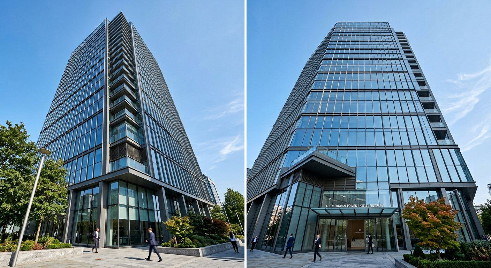
Façades vitrées structurelles pour bâtiments tertiaires.
Découvrir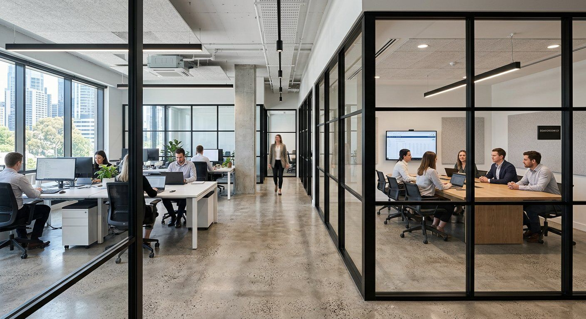
Cloisons vitrées et verrières pour bureaux et espaces intérieurs.
Découvrir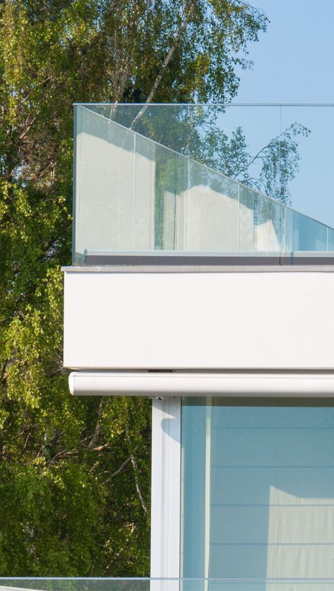
Garde-corps verre et aluminium pour balcons, terrasses et escaliers.
Découvrir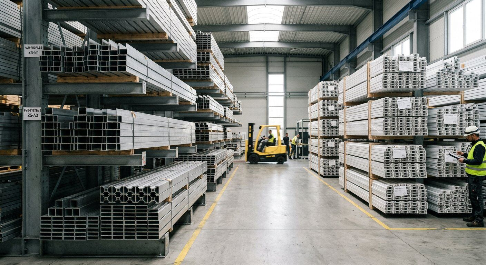
Études et fabrications spécifiques pour projets architecturaux.
Découvrir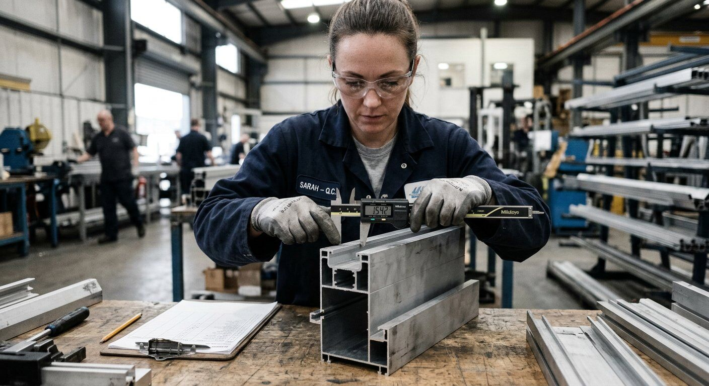
La fiabilité d'une menuiserie se joue dans le choix des matériaux, la précision de la fabrication et la rigueur du contrôle.
Profilés aluminium et PVC de qualité, vitrages isolants et quincailleries sélectionnées pour leur durabilité.
Découpe et usinage numériques pour des tolérances maîtrisées et des assemblages parfaitement ajustés.
Chaque ouvrage est vérifié avant expédition : dimensions, équerrage, fonctionnement et étanchéité.
Finitions thermolaquées résistantes, joints haute performance et suivi après installation.
Ateliers de découpe, d'usinage et d'assemblage, stockage des profilés, équipes de fabrication et de pose : Cristalu Maroc fabrique ce qu'elle installe.
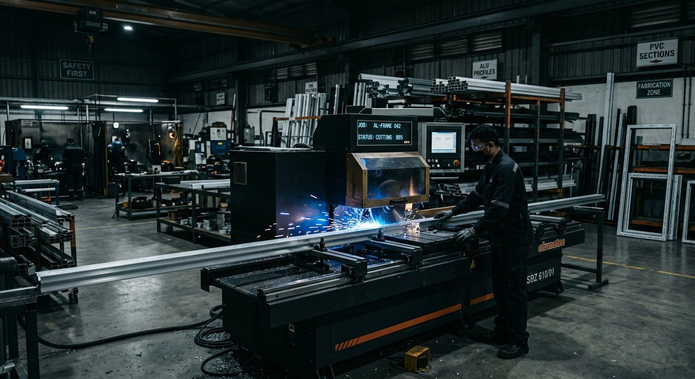
Une organisation de production pensée pour la précision, la traçabilité et le respect des délais.
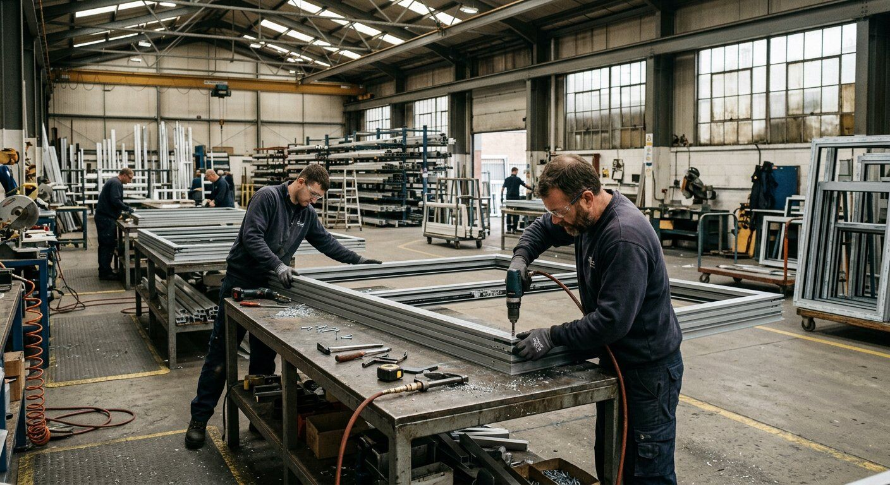
Nous accompagnons architectes, bureaux d'études, promoteurs et entreprises générales, de la phase de conception jusqu'à la livraison.
Plans d'exécution, carnets de détails et nomenclatures.
Choix des systèmes, performances thermiques et acoustiques.
Dimensions, finitions RAL, vitrages et quincailleries spécifiques.
Un interlocuteur dédié et un suivi de chantier structuré.
Visualisez nos menuiseries en trois dimensions, observez les profils et les finitions. Un showroom virtuel et un configurateur en ligne sont en cours de déploiement.